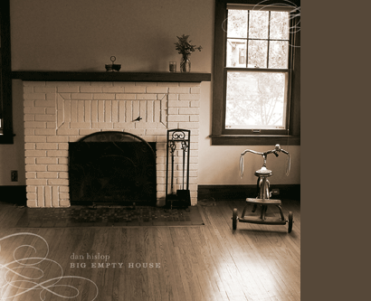

The Big Empty House project was recorded Summer 2006 with Andy White in Carpinteria, California. That the studio is called, "Good Times Studio" is no front...Good Times, in fact, abound. And that's not just the facilities. No, Andy is the man of the hour, coaxing out the vocals, engineering to perfection, cranking out riffs like Edison did ideas. From the carefree summer fills on Choose You to the fall-afternoon slides of The Specifics, Whitey's guitars are so tasteful you'll find yourself hungry for dinner.
With good friends popping in to lend a vocal here or musical vibe there, the "Solo effort" was not solo at all and became so fun it seemed effortless. Check out Tad Wagner's dreamy vocals on Day to Day; just try to ignore Neil Dimaggio's brooding piano work on the bridge of Big Empty House . Kathleen Sieck's bittersweet vocal carries Laughing Soon, while Jen Clark's unforgettable harmonies combine with her violin to haunt Your Voice . The first two cuts charge forward on the back of Brad McCarter's bass while Andy's hand on the 4-string solidly anchors the rest. Perhaps most astounding is the reliably creative drumming of Erik Herzog, whose rhythm is more relentless and steady than a winter swell at Rincon.
After Bruce Winter mastered the album, Scott Anderson pitched in to package this thing up properly, using a homespun shot of the Dykstra's Empty House and the exceptional photos of Geordie Speake.
|
 |